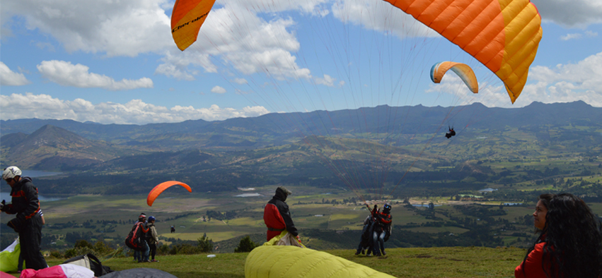
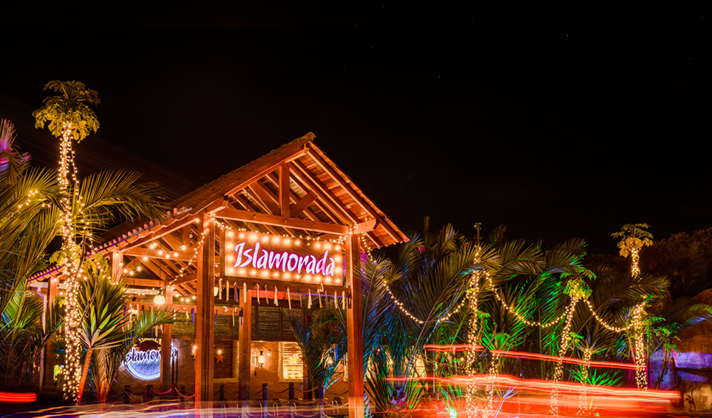
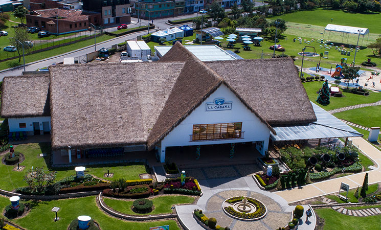
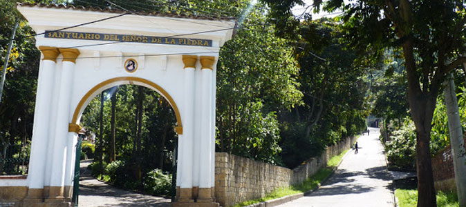

Parapente Paraiso
En Sopó es posible hacer este deporte de aventura, desde la montaña
conocida como: pionono, allí es posible encontrar paintball, canopy,
senderismo y bicicleta de montaña. También hay cafetería y restaurante.

Islamorada
Es un restaurante ubicado en lo alto de las montañas de Sopó, a la sombra del
monte Pionono y el cerro de Las Águilas. Allí, la vista y la naturaleza se
conjugan para ofrecer a los comensales una experiencia fascinante.

Cabaña de Alpina
Es un lugar rodeado por zonas verdes y adecuado para el disfrute de toda la
familia, allí es posible encontrar todos los productos de la empresa de lácteos
Alpina, postres, quesos, yogures etc.

Santuario del Señor de la Piedra
Es un santurario conocido por los feligreses como un centro de peregrinación
donde reposa un roble de piedra con la imagen de Jesucristo que, según cuentan,
fue descubierta en 1753.
